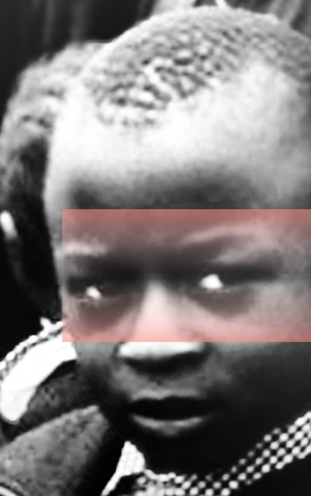
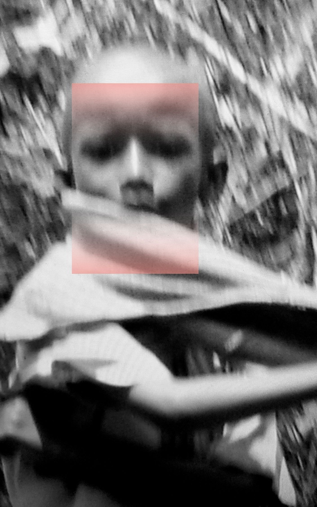
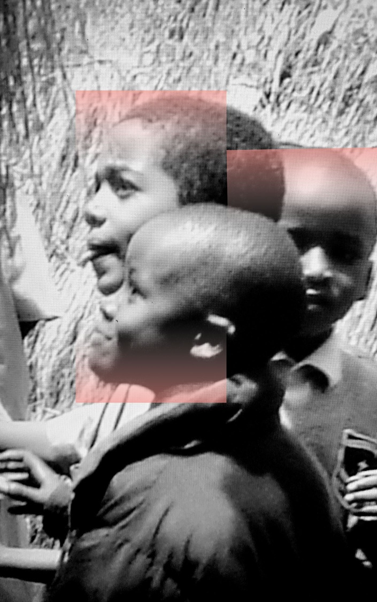
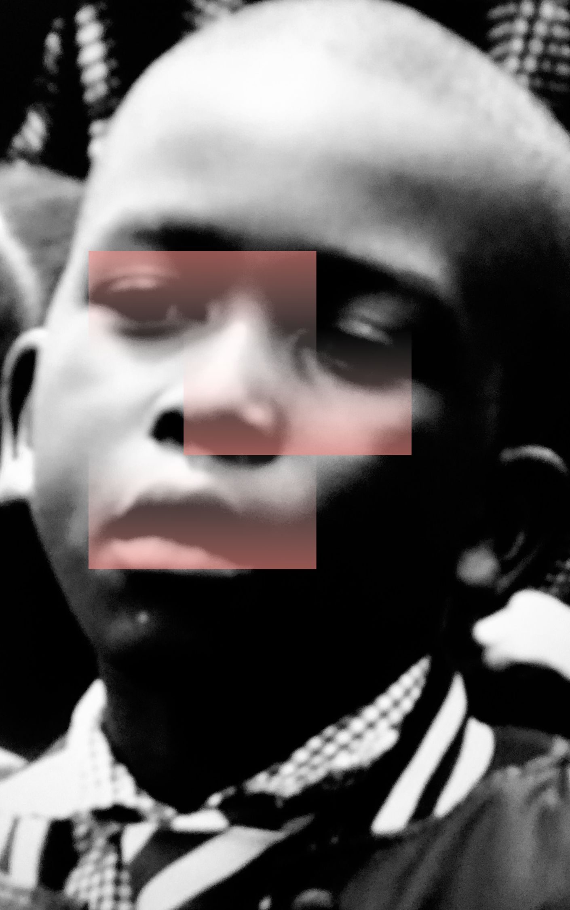
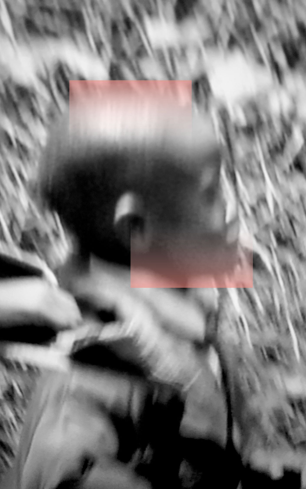
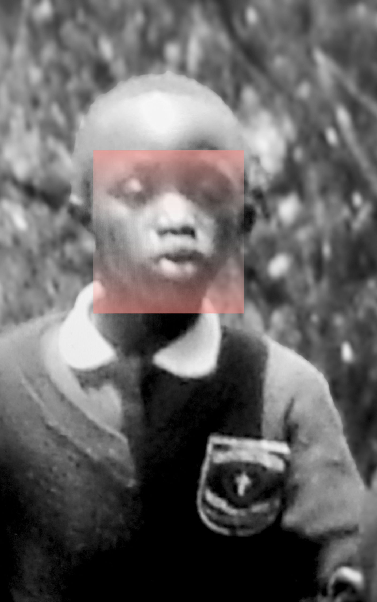
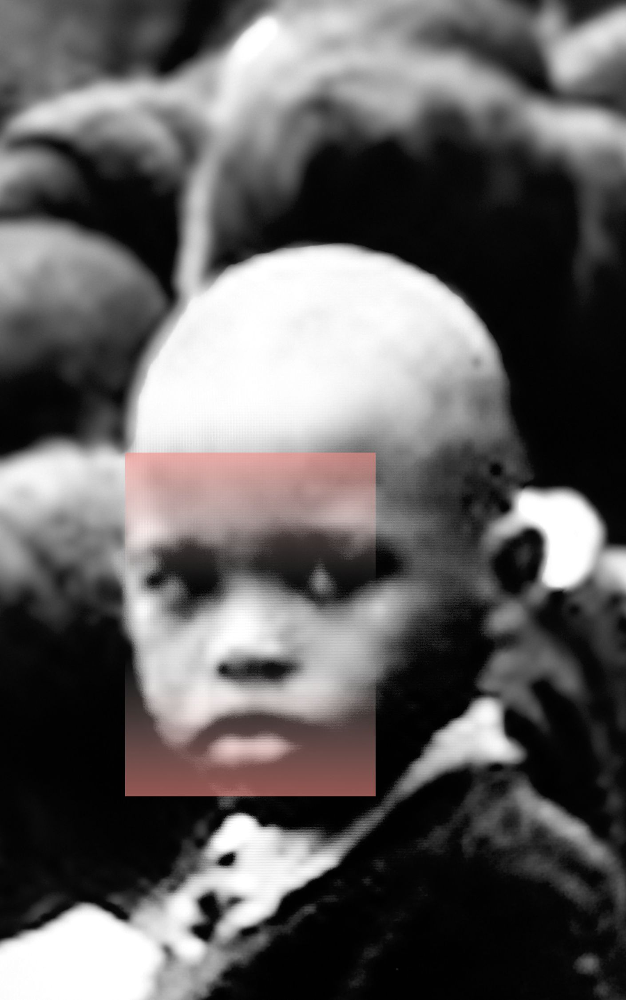
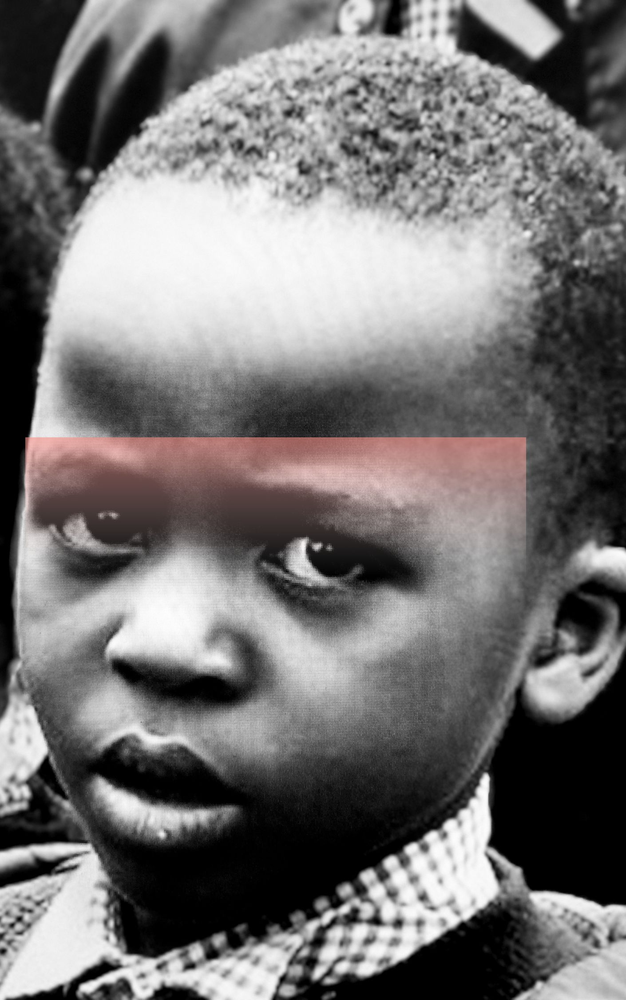
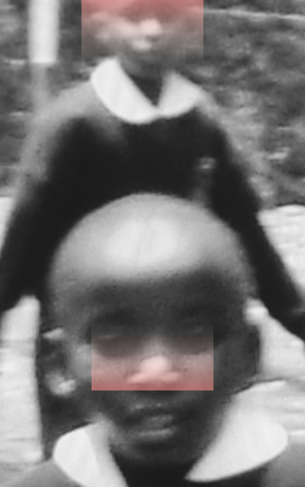

• Global Practice & Institutional Archives
A practice defined by large-scale monochromatic works, raw human portraiture, and expansive conceptual series. Held across public state repositories, international museum collections, and private foundations, the studio maintains an active archive spanning public installations, solo monograph projects, and ongoing site-specific research across Europe, Asia, and Africa.
• Photo Monograph Series • Kenya • 2008
Chronicles of Mombasa +
Faces, Moments, and the Unfiltered Spirit of East Africa





















Interactive Global Footprint Radar
• 30-YEAR FLIGHT & MONOGRAPHIC RADAR • CLICK ANY PULSING NODE
Explore solo retrospectives, linguistic provenance partners, and ecological material patrons worldwide.